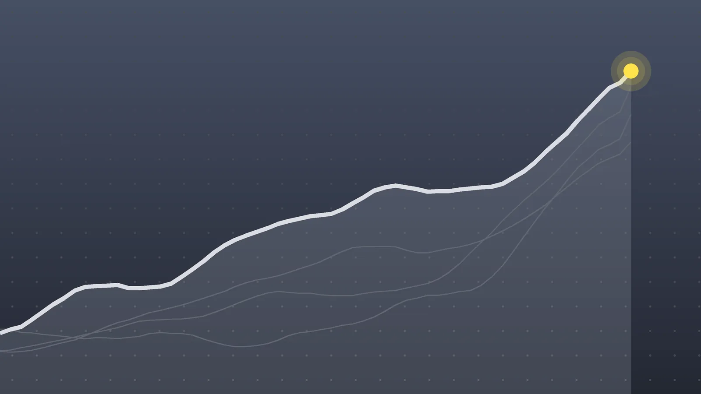

PoliticsExplainer
Election Workers: Judge Bars DOJ and DHS Threats Before Midterms
The order lands four days before Election Day and caps a week of court losses for the administration’s push to set aside ballots from people it says may be noncitizens.

Quick take
- U.S. District Judge Trina Thompson issued an eight-page temporary restraining order on Oct. 30 in a case brought by SEIU and other unions.
- The order bars DOJ and DHS from threatening or coercing election workers into halting ballots solely because the government says a voter is ineligible.
- It runs through Nov. 16, nearly two weeks after the Nov. 3 Election Day, NBC News reports.
- The same week, appeals and district courts rejected federal bids to set aside California ballots tied to about 20,000 voters flagged as likely noncitizens.
Why it's trending On the night of Friday, Oct. 30, a federal judge in California ordered the Trump administration to stop threatening election officials, days before the Nov. 3 midterms.
What happened
A federal judge in California has ordered the Trump administration to stop threatening election workers with criminal charges over ballots it says were cast by ineligible voters. U.S. District Judge Trina Thompson of the Northern District of California issued the eight-page temporary restraining order on the night of Friday, Oct. 30, Law&Crime reports.
The order bars the Justice Department and the Department of Homeland Security from threatening, intimidating or coercing state and local election officials into halting the processing of a registered voter’s ballot solely because the administration claims that voter is ineligible. It stays in effect through Nov. 16, nearly two weeks after the Nov. 3 midterm elections, according to NBC News.
Thompson, who was appointed by President Joe Biden, wrote that high-ranking DOJ and DHS officials had run “a campaign to intimidate, threaten, and coerce” the people running the election.
What the order requires
According to Fox News, the order means the federal government may not, based only on its own claims that certain registered voters are ineligible:
- threaten election workers with prosecution for processing those voters’ ballots;
- demand that officials remove those voters from the rolls or refuse them ballots;
- demand that officials set aside (“segregate”) their ballots or decline to count them.
The government must also tell the state and local offices that received its letters that the demands and prosecution threats in them are now blocked.
A temporary restraining order is a short-term emergency order. It freezes the situation while a case moves forward, so it isn’t a final ruling on who is right. To grant one, a judge has to find the plaintiffs are likely to win and would suffer harm without quick action. Thompson found the agencies’ conduct likely violates the Voting Rights Act’s ban on voter intimidation, as well as several parts of the Constitution: the Elections Clause plus the Fifth and Tenth Amendments, Law&Crime reports. She also noted that ballots have already gone out and voting is underway.
How the dispute started
The case grew out of the administration’s effort to flag voters it believes are not citizens. The Justice Department compiled a list of about 20,000 California residents it calls “likely noncitizens” and sued the state over it. It has also pressed both California and Washington to pull aside ballots it suspects came from noncitizens.
Letters to local officials raised the stakes. Last week, DOJ sent letters to every California county but one (57 of 58), telling election officials to cooperate with federal investigations into alleged illegal voting or face investigation themselves, NBC News reports. One of them, dated Oct. 22 and signed by Bilal Essayli, the first assistant U.S. attorney, went to San Bernardino County and listed 1,133 registered voters it called “likely aliens.” It asked the county to commit within 48 hours to working with DOJ and DHS, to share nonpublic data such as Social Security and driver’s license numbers, and to set aside rather than cancel mail ballots for people whose citizenship couldn’t be confirmed.
The Service Employees International Union and other unions that represent election workers sued earlier in the week, filing a 46-page complaint, according to Law&Crime. Fox News reports that civil rights groups, including the NAACP, are also among the plaintiffs.
A week of rulings, in order
| Day | Ruling |
|---|---|
| Monday, Oct. 26 | An appeals court turns down DOJ’s attempt to hold back over 20,000 California ballots |
| Wednesday, Oct. 28 | A federal judge says the request to set ballots aside conflicts with states’ control of their elections |
| Friday, Oct. 30 | The Ninth Circuit rejects DOJ’s emergency request to make California set aside the flagged mail ballots |
| Friday night, Oct. 30 | Thompson’s order bars threats against election workers through Nov. 16 |
Put together, courts have now turned down the administration’s ballot requests at both the trial and appeals level, and Thompson’s order goes a step further by shielding the workers who handle the ballots. The Washington case is still pending, NBC News reports.
Who says what
- The administration says its actions are meant to stop unlawful voting by noncitizens and protect the integrity of the election. Essayli wrote that DHS built its list using a “multilayered, multiagency investigative methodology.” Fox News said it asked DOJ for comment and reported no reply.
- The unions and civil rights groups say the threats are aimed at workers who are simply counting ballots and that the government has kept making them, including in open court in a related case, Law&Crime reports.
- The judge wrote that a fair election depends on voters casting ballots “free from threat, fear, or intimidation.”
What happens next
- Tuesday, Nov. 3: Election Day, with the order in force.
- Notices: DOJ and DHS must tell the offices that got the letters that the threats are blocked.
- A possible appeal: none of the reports reviewed said whether the administration will appeal.
- Nov. 16: the order expires unless the court extends it or replaces it with a longer-lasting injunction.
Quick answers
Who is Judge Trina Thompson?
She is a U.S. district judge in the Northern District of California, appointed by President Joe Biden. She issued the order on Oct. 30.
Does the order stop the government from investigating noncitizen voting?
The order, as reported, targets threats and demands that rest solely on the government’s claim that a voter is ineligible, such as pressuring workers to stop processing those ballots. The reports reviewed don’t describe it as ending the investigations themselves.
How long does the order last?
Through Nov. 16, 2026, about two weeks after Election Day.
Sources
- NBC News Judge orders Trump administration to stop threatening election officials with criminal chargesOct. 30, 2026
- Fox News Federal judge blocks Trump administration from threatening election workersOct. 31, 2026
- Law&Crime via Yahoo News Trump admin must put an end to threats and 'campaign to intimidate' election workers who are simply counting ballots, court rulesOct. 31, 2026
- NBC News via AOL Judge orders Trump administration to stop threatening election officialsOct. 31, 2026